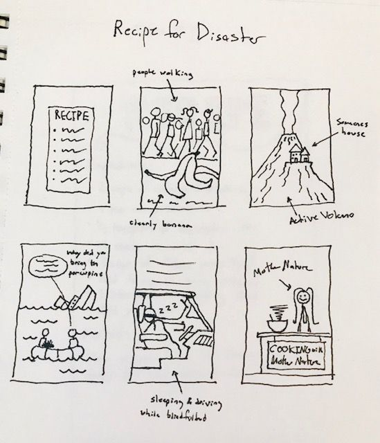

Disaster

Description
Have you ever wanted a make a Disaster but were never really sure where to begin?
Maybe you noticed growing up that your family made a great Disaster, or perhaps
your friends knew how to whip a Disaster up in no time. Well look no further as
if you follow these steps you'll be well on your way to a great Recipe for Disaster.
What You'll Need
- 1 part Impatience (the blinding, reckless kind)
- 2 parts Bad Luck (you could make your own, but who has time to make their own luck these days?
- 1 part Ignorance (Remember, it's bliss)
- A pinch of Sarcasm
Directions
- Mix parts Impatience and Ignorance together in a haphazard type of way.
- Do not take your time, this is important, a good recipe for this type
of disaster involves rushing.
- Now take all of your Bad Luck and whip into the mixture in a smooth motion.
In contrast to mixing the Ignorance
and Impatience, you want the Bad Luck to be mixed in slowly, almost as if
it's been there all along.
- Add some same Sarcasm as without it, this whole thing could get a little dark.
- Serve carefully.